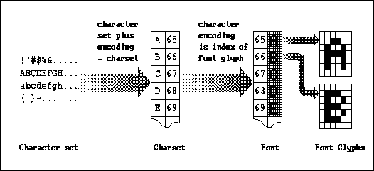

Xlib Programming Manual (O'Reilly & Associates, Inc.) |
An internationalized application is one that runs, without changes to the binary, in any given "locale." Among other things, this means that a program must display all text in the user's language, accept input of all text in that same language, and display times, dates, and numbers in the user's accustomed format.
The internationalization of terminal-based programs is a problem that has been satisfactorily solved where terminals exist that can display and accept input for a particular language. The ANSI-C library contains mechanisms for this terminal-based internationalization, and R5 internationalization is based on these mechanisms. This chapter begins with a detailed overview of the goals, concepts, and techniques of internationalization, starting with ANSI-C internationalization and progressing to the new R5 internationalization features. After the overview, each section covers an individual topic in X internationalization. Internationalized text input with R5 is a large subject and is given its own chapter following this one.
Internationalization is implemented with a separate set of functions for handling keyboard input and drawing text, that are new in Release 5. All the input and drawing techniques shown in previous chapters continue to work, but they do not support internationalization. So it is up to you which set of functions to use depending on your needs.
Also note that the internationalization features of R5 are not self contained, and therefore may not work on all systems. If you do not have the ANSI-C internationalization features, you may be able to make do with alternatives provided by Xlib and by contributed libraries, but these have not been thoroughly tested and you may encounter difficulties. In ANSI-C internationalization, the C library reads a "localization database" customized for each locale. Many systems (systems sold in the U.S., at least) support ANSI-C internationalization, but do not ship databases for any but a default locale.
One more warning and disclaimer is required. These internationalization features are new in Release 5, and therefore there is no experience in their use. So the coverage in this book probably does not yet answer every question you might have, nor present a foolproof procedure for writing an internationalized application. We hope to add more practical instructions once we know better what to tell you.
A final point of terminology: the word "internationalization"
contains 20 letters. In the MIT X documentation and elsewhere, you may
find it abbreviated as i18n--the letter "i" followed by 18 letters
and the letter "n."
The following sections continue this introduction to internationalization with a description of the ANSI-C setlocale mechanism and a further discussion of character encoding and text representation issues.
The first step in any internationalized application is to establish the locale--to cause the localization database to be read in. This is done with the C library function setlocale. It takes two arguments: a locale category and the locale name. The locale name specifies the database that should be used to localize the program, and the locale category specifies which behaviors (for example, the collation sequence of the alphabet or the formatting of times and dates) of the program should be changed. setlocale will most often be used as shown below:
Passing the empty string as the locale name will cause setlocale to get the name of the locale from the operating system environment variable named LANG. This allows the application writer to leave the choice of locale to the end user of the application. There is no standard format for locale names, but they often have the form:setlocale(LC_ALL, "");
So the locale "Fr" might be used in France, while "En_GB" might specify English as used in Great Britain, and "En_US" English as used in the U.S. The codeset field can be used to specify the encoding (i.e., the mapping between numbers and characters) to be used for all strings in the application when there is not a single default encoding used for the language in the territory. The locale "ja_JP.ujis" is an example--"ujis" is the name of one of the encodings in common use for Japanese. The name of the default locale is simply "C." This locale is familiar to American computer users and all C programmers. Finally, note that the return value of setlocale is a char *. It returns the name of the locale that was just set, or if it is passed a locale name of NULL (not the same as ""), it will return the name of the current locale.language[_territory[.codeset]]
The category LC_ALL instructs setlocale to set all internationalization behavior defined by ANSI-C to operate in the given locale. The locale may also be specified for each category individually. The standard categories (other, non-standard, categories may also be defined) and the aspects of program behavior that they control are listed below:
We've been using the term encoding rather loosely. Before we consider text representation any further, some definitions are appropriate. A character is an abstract element of text, distinct from a font glyph, which is the actual image that gets displayed. A character set is simply a set of characters; there are no numbers associated with those characters. We are all familiar with the character set used by ASCII. The Latin-1 character set used by many Western European Latin-based languages is an extension of ASCII that contains the accented characters required by many of those languages. An encoding is any numeric representation of the characters in a character set. The term codeset is sometimes used as a synonym for encoding. A charset (not the same as a character set) is an encoding in which all characters have the same number of bits. ASCII is a 7-bit encoding, for example, and is therefore a charset. Figure 10-1 diagrams the relationship between character sets, charsets, fonts, and font glyphs.
Character sets, encodings, charsets, fonts, and glyphs

The last two fields of an X font name specify a charset. By definition, the index of a font glyph in the font is the same as the encoding of the corresponding character in that charset. When the encoding of a locale is a charset, this obviously simplifies matters a great deal: text in the locale can be displayed using glyphs from a single font, and the character encoding can be used directly as the index of the corresponding font glyph.
Not all languages can be represented with a single charset, however. Japanese text, for example, commonly requires Japanese ideographic characters, Japanese phonetic characters, and Latin characters. Each of these character sets has its own standard fixed-width encoding, and is therefore a charset. Note, however, that the ideographic charset is 16-bits wide while the phonetic and Latin charsets are 8-bits wide. Full Japanese text display requires a font for each charset, and Japanese text representation requires a "super-encoding" that combines each of the component encodings. There are, in fact, several encodings commonly used for Japanese text. What they have in common is the use of "shift sequences" to indicate which charset the following character belongs to.
It is crucial to the concept of a locale that each locale has a single well-defined encoding. Many languages have only a single standardized encoding. If a language can be encoded in more than one standard way, each encoding defines a locale of its own, and the name of the encoding is part of the name of the locale.
ISO8859-1 contains a superset of the ASCII characters. Every character in the ASCII character set has the same encoding in Latin-1 as it does in ASCII. (But Latin-1 does not define any control characters such as linefeed, backspace or the bell character.) Because it is an 8-bit encoding, Latin-1 strings can be represented using the usual C null-terminated array of char. Because the characters are a uniform 8 bits and because strings do not contain embedded shift states, it is possible to use Latin-1 strings with the standard C string manipulation routines (strlen, strcat, etc.) In conjunction with the ANSI-C internationalization facilities, the careful design of ISO8859-1 means that most programs originally written for ASCII use can easily be ported for use in most Western European countries.
But it is not so simple once we try to go beyond Western Europe and Latin-based alphabets. Japanese text, for example, commonly uses (at least within the computer industry) words written in the Latin alphabet along with phonetic characters from the katakana and hiragana alphabets and ideographic kanji characters. Each of these types of text has its own charset (8- or 16-bit), but they must be combined into a single encoding for Japanese text. This is done with shift sequences, bytes embedded in the running text which control the character set in which the following character will be interpreted. It is possible to use "locking shifts" which modify the interpretation of the next and subsequent characters, but this scheme is infrequently used because it makes strings of text very difficult to manipulate.
Compound Text is another text representation that is used in X applications. Compound Text strings identify their encoding using embedded escape sequences (they can also have multiple sub-strings with multiple encodings) and are therefore locale-independent. The Compound Text representation was standardized as part of X11R4 for use as a text interchange format for interclient communication. It is often used to encode text properties and for the transfer of text via selections, and is not intended for text representation internal to an application. There are new R5 routines that convert X property values to and from the Compound Text representation. Note that Compound Text is not the same thing as the Compound Strings used by the Motif widget set.
As an alternative to these multi-byte strings, ANSI-C defines a wide-character type, wchar_t, in which each character has a fixed size and occupies one array element in the string. (The wchar_t is 2 bytes on some systems, 4 bytes on others, and may be 1 byte on systems that support nothing but the default C locale.) ANSI-C defines functions to convert between multi-byte and wide-character strings: mblen, mbstowcs, mbtowc, wcstombs, and wctomb. As you can see here, and as you will see with the R5 internationalized text input and output functions, "multi-byte" is commonly abbreviated "mb" in function names, and "wide character" is abbreviated "wc." Multi-byte strings are usually more compact than wide-character strings, but wide-character strings are easier to work with. Note that ANSI-C does not provide wide-character string manipulation functions. There is, however, a contributed library of wide character functions that is shipped with the MIT R5 release; see the directory contrib/lib/Xwchar.
In an internationalized application, you must take care to handle all strings properly. Unfortunately the ANSI-C library does not provide adequate functions or conventions for sophisticated internationalized text manipulation. Note, though, that many applications can do internationalized text input and output without performing any manipulations on that text. The following list gives a few guidelines for handling internationalized strings:
The sections below cover these topics as follows:
Immediately after calling setlocale, an application should call XSupportsLocale() to determine if the Xlib implementation supports the current locale. This function takes no arguments and return a Bool. If this function returns False, an application will typically print a "Locale not supported" message and exit.
After verifying that the locale is supported, an application should call XSetLocaleModifiers(). A "locale modifier" can be thought of as an extension to the name of a locale; it specifies more information about the desired localized behavior of an application. R5 as shipped by MIT recognizes one locale modifier, used to specify the input method (see Chapter 10, "Internationalization") to be used for internationalized text input for the locale.
XSetLocaleModifiers() allows the programmer to specify a list of modifiers (usually none) which will be concatenated with a list of user-specified modifiers from an operating system environment variable (XMODIFIERS in POSIX). The strings passed to XSetLocaleModifiers() and set in the XMODIFIERS environment variable are a series of concatenated "@category=value" strings. Thus to specify that the "Xwnmo" input method should be used by an application, a user might set the XMODIFIERS as follows:
Example 10-1 shows code that uses setlocale and the two functions described here to correctly establish its locale.setenv XMODIFIERS @im=_XWNMO
Establishing the locale of an X application
#include <stdio.h>
#include <X11/Xlib.h>
/*
* include <locale.h> or the non-standard X substitutes
* depending on the X_LOCALE compilation flag
*/
#include <X11/Xlocale.h>
main(argc, argv)
int argc;
char *argv[];
{
char *program_name = argv[0];
/*
* The error messages in this program are all in English.
* In a truly internationalized program, they would not be
* hardcoded; they would be looked up in a database of some sort.
*/
if (setlocale(LC_ALL, "") == NULL) {
(void) fprintf(stderr, "%s: cannot set locale., program_name);
exit(1);
}
if (!XSupportsLocale()) {
(void) fprintf(stderr, "%s: X does not support locale %s.,
program_name, setlocale(LC_ALL, NULL));
exit(1);
}
if (XSetLocaleModifiers("") == NULL) {
(void) fprintf(stderr, "%s: Warning: cannot set locale modifiers.,
program_name);
}
.
.
.
}
Not all systems support the setlocale function, but
X can be built for these systems by defining the X_LOCALE compilation
flag. When writing programs in an environment that does not have setlocale,
include the header file <X11/Xlocale.h>. If this file is compiled
with X_LOCALE defined, it defines setlocale as a macro for
an Xlib-internal function. Otherwise, it simply includes the standard header
<locale.h> to get the correct declaration of the real setlocale.
R5 bases its new text output routines on a new Xlib abstraction, the XFontSet. An XFontSet is bound to the locale in which it is created, and contains all the fonts needed to display text in that locale, or all the independent charsets used in the encoding of that locale. Technical Japanese text, for example, often mixes Latin with Japanese characters, so for a Japanese locale, fonts might be required with the charsets jisx0208.1983-0 for Kanji ideographic characters, jisx0201.1976-0 for Kana phonetic characters, and iso8859-1 for Latin characters.
Drawing internationalized text in R5 is conceptually very similar to drawing text in X11R4--there are routines that allow you to query font metrics, measure strings, and draw strings. The new R5 functions use an XFontSet rather than an XFontStruct or a font specified in a graphics context. The drawing and measuring routines interpret text in the encoding of the locale of the fontset, and correctly map wide or multi-byte characters to the corresponding font glyph (or glyphs).
XCreateFontSet() returns a list of the charsets for which no font could be found, and a default string that will be drawn in place of characters from the missing charset or charsets. The list of missing charsets should be freed with a call to XFreeStringList(). The returned default string should not be freed by the programmer. Example 10-2 shows how to create an XFontSet.
Creating an XFontSet
XFontSet fontset;
char **missing_charsets;
int num_missing_charsets = 0;
char *default_string;
int i;
.
.
.
fontset = XCreateFontSet(dpy,
"-misc-fixed-*-*-*-*-*-130-75-75-*-*-*-*",
&missing_charsets, &num_missing_charsets,
&default_string);
/*
* if there are charsets for which no fonts can
* be found, print a warning message.
*/
if (num_missing_charsets > 0) {
(void)fprintf(stderr, "%s: The following charsets are missing:,
program_name);
for(i=0; i < num_missing_charsets; i++)
(void)fprintf(stderr, "%s: %s, program_name,
missing_charsets[i]);
(void)fprintf(stderr, "%s: The string %s will be used in place,
program_name, default_string);
(void)fprintf(stderr, "%s: of any characters from those sets.,
program_name);
XFreeStringList(missing_charsets);
}
.
.
.
If you use a very generic base font name list, be aware that
XCreateFontSet() may have to search through a large number of font
names in order to find fonts of the appropriate charset. Also, when using
an R5 X server, try to specify a base font name that will not require scaling.
For example, many of the Japanese fonts shipped with the MIT distribution
are defined at odd point sizes (11, 13, 15, etc.) instead of the even sizes
more commonly used for Latin-1 fonts. If your base font name list specifies
a 14-point font, the X server or font server may have to scale thousands
of ideographic characters, causing a significant delay in your application;
the server may even freeze up while the scaling is performed. See Chapter
6 and Appendix A for more information about font scaling.
The following routines also use or operate on font sets:
The XFontSetExtents() structure
typedef struct {
XRectangle max_ink_extents; /* over all drawable characters */
XRectangle max_logical_extents; /* over all drawable characters */
} XFontSetExtents;
Each XRectangle specifies, as usual, the upper left-hand
corner of a rectangle, and a positive width and height. The max_ink_extents
rectangle specifies the bounding box around the actual glyph image of all
characters in all fonts of the font set. The max_ logical_extents
rectangle describes the bounding box for all characters in all fonts of
the font set that encloses the character ink plus intercharacter and interline
spacing. For the layout of running text, the logical extents will be more
useful. Note that these rectangles do not simply describe the biggest character
in the font set, but describe a bounding box that will enclose all characters
in the font set; a box big enough to accommodate the largest descent, the
largest ascent, and so on. The XFontSetExtents() structure returned
by XExtentsOfFontSet() is private to Xlib and should not be modified
or freed by the application.
The function XContextDependentDrawing() returns True if the locale associated with a font set includes context dependencies in text drawing. An internationalized application could use this function to check if it can take the various shortcuts allowed in non-context dependent locales. If XSupportsLocale() returns True, then any context dependencies in the text of a locale are correctly handled by the text-measuring and text-displaying routines described below.
There is another, more difficult, kind of context dependency in languages such as Hebrew and Arabic which are drawn right-to-left except for numbers which are drawn left-to-right. In this case it is not valid to assume that characters that are adjacent in a string will be adjacent when displayed. R5 does not make any provisions for handling this sort of text with mixed drawing directions.
There is another pair of text extent functions that are useful when there are context dependencies in the displayed text. Xmb/XwcTextPerCharExtents() return the escapement and extents of a string as the above functions do, but also return the ink extents and the logical extents of each character in the string. These extents are measured relative to the drawing origin of the string, not the origin of the particular glyph. Note that these extents are returned for each character of the string, not for each font glyph displayed. If a sequence of characters map to a single glyph, each of those characters will have identical extent rectangles. Similarly if a single character requires several font glyphs to display, its extents will be the combined extents of those glyphs. The dimensions of the rectangle are independent of the drawing direction of the character.
Example 10-4 in the next section shows a use of XmbTextExtents() and XmbTextPerCharExtents().
The XmbTextItem() and XwcTextItem() structures
typedef struct {
char *chars; /* pointer to string */
int nchars; /* number of bytes in string */
int delta; /* pixel delta between strings */
XFontSet font_set; /* fonts, None means don't change */
} XmbTextItem;
typedef struct {
wchar_t *chars; /* pointer to wide char string */
int nchars; /* number of wide characters */
int delta; /* pixel delta between strings */
XFontSet font_set; /* fonts, None means don't change */
} XwcTextItem;
Example 10-5 shows the use of XwcDrawImageString().
Centering and drawing a multi-byte string
#include <X11/Xlib.h>
/*
* This function draws a specified multi-byte string centered in
* a specified region of a window.
*/
void DrawCenteredMbString(dpy, w, fontset, gc,
str, num_bytes, x, y, width, height)
Display *dpy;
Window w;
XFontSet fontset;
GC gc;
char *str;
int num_bytes;
int x, y, width, height;
{
XRectangle boundingbox;
XRectangle dummy;
int originx, originy;
/*
* Figure out how big the string will be.
* We should be able to pass NULL instead of &dummy, but
* XmbTextExtents is buggy in the Xsi implementation.
* Also, it should return the escapement of the string, but doesn't.
*/
(void) XmbTextExtents(fontset, str, num_bytes,
&dummy, &boundingbox);
/*
* The string we want to center may be drawn left-to-right,
* right-to-left, or some of both, so computing the
* drawing origin is a little tricky. The bounding box's x
* and y coordinates are the upper left hand corner and are
* relative to the drawing origin.
* if boundingbox.x is 0, the string is pure left-to-right.
* If it is equal to -boundingbox.width then the string is pure
* right-to-left, but it may not be either of these, so what
* we've got to do is choose the origin so that the bounding box
* is centered in the window without assuming that the origin is
* at one end or another of the string.
*/
originx = x + (width - boundingbox.width)/2 - boundingbox.x;
originy = y + (height - boundingbox.height)/2 - boundingbox.y;
/*
* now draw the string
*/
XmbDrawImageString(dpy, w, fontset, gc,
originx, originy,
str, num_bytes);
}
Some of the issues that must be considered are the appropriate encoding for color and font names passed to the X server, the encoding of bitmap files, the encoding of strings selected in one client and copied to another, and the encoding of resource values and names. When making decisions on questions like these, the designers of X internationalization had several choices. They could specify that particular strings were:
Note that the above list refers to the COMPOUND_TEXT and STRING encodings. These capitalized names refer to the Atom names used in the ICCCM to specify the type of a "Property." The ICCCM also specifies a selection conversion target Atom, TEXT, which simply means a string in whatever encoding is convenient for the selection owner.
Sometimes the best choice of encodings is ASCII. It may seem unfair to non-English locales that the ASCII encoding should be singled out for special treatment, but for strings that are to be shared between X client and X server (such as Display, Property, and font and color names) some standard encoding must be specified. Because ASCII is widespread and is the usual encoding for C programming, it is a natural choice. In many cases, though, it is not the specific ASCII encoding that is important, but the fact that there is some common encoding for all the characters used by ASCII. R5 never actually refers to ASCII. Instead, it defines the X Portable Character Set as a set of basic characters that must exist in all locales supported by Xlib. Those characters are:
a..z A..Z 0..9
!"#$%&'()*+,-./:;<=>?@[\]^_`{|}~
<space>, <tab>, and <newline>
R5 also defines the Host Portable Character Encoding
as the encoding for that character set. The encoding itself is not defined;
the only requirement is that the same encoding is used for all locales
on a given host machine. A string in the Host Portable Character Encoding
is understood to contain only characters from the X Portable Character
Set. Finally, the Latin Portable Character Encoding is the characters
of the X Portable Character Set encoded as a subset of the Latin-1 encoding.
(Latin-1 is itself a superset of ASCII.) Note that if an X client running
on one host has a different portable encoding than an X server running
on a different host, then translation from one encoding to the other will
be required (for color names, font names, etc.) and would be done by the
Xlib communication layer. In practice, however, it is likely that all systems
will simply use an encoding which is a superset of ASCII, (with the possible
exception of mainframes that use EBCDIC) and therefore all characters in
the X Portable Character Set will share a single, standard (ASCII) encoding.
Appendix K of Volume Two, Xlib Reference Manual summarizes all the
encodings.
String-encoding issues arise throughout Xlib, and particularly
so for functions that involve X properties and resource databases. The
internationalization of client-to-window-manager and client-to-client communication
via properties is described in 10.5 below and the internationalization
of X resource databases is discussed in 10.6. Here we itemize the remaining
changes to the Xlib specification that involve string encodings. Table
10-1 lists Xlib functions and the encodings of the strings that are passed
in and out of them. These are not so much changes to the Xlib specification
as clarifications of it to make the encodings explicit.
| Function | String Encoding |
|---|---|
| XDrawImageString() XDrawString() XQueryTextExtents() XTextExtents() XTextWidth() XTextItem structureXChar2b structure | No encoding; "characters" are treated as glyph indexes into the font, independent of locale. |
| XServerVendor() ServerVendor() macro | If the X server uses the Latin Portable Character Encoding, this function will return a string in the Host Portable Character Encoding; otherwise the encoding is implementation-dependent. |
| XOpenDisplay() XDisplayName() DisplayName() macro XDisplayString() DisplayString() macro | Display names in the Host Portable Character Encoding are supported; additional encodings are implementation dependent. |
| XAllocNamedColor() XLookupColor() XStoreNamedColor() XParseColor() | Color names in the Host Portable Character Encoding are supported; Xlib implementations may support additional encodings, and may look up color names in locale-specific databases before passing them to the server. |
| XLoadFont() XLoadQueryFont() | Font names in the Host Portable Character Encoding are supported; implementations may support additional encodings. |
| XListFonts() XListFontsWithInfo() | Font patterns in the Host Portable Character Encoding are supported; implementations may support additional encodings. Returned strings are in the Host Portable Character Encoding if the server returns strings in the Latin Portable Character Encoding; otherwise the encoding is implementation-dependent. |
| XSetFontPath() XGetFontPath() | The encoding and interpretation of the font path is implementation-dependent. |
| XParseGeometry() XGeometry() XWMGeometry() | Geometry strings in the Host Portable Character Encoding are supported; implementations may support additional encodings. |
| XInternAtom() | Atom names in the Host Portable Character Encoding are supported; implementations may support additional encodings. |
| XGetAtomName() | The returned atom name is in the Host Portable Character Encoding if the server returns a value in the Latin Portable Character Encoding. |
| XStringToKeysym() | Keysym names in the Host Portable Character Encoding are supported; implementations may support additional encodings. |
| XKeysymToString() | The returned string is in the Host Portable Character Encoding. |
| XInitExtension() XQueryExtension() | Extension names in the Host Portable Character Encoding are supported; implementations may support additional encodings. |
| XListExtensions() | The returned strings are in the Host Portable Character Encoding if the server returns strings in the Latin Portable Character Encoding. |
| XReadBitmapFile() | The bitmap file is parsed in the encoding of the current locale. |
| XWriteBitmapFile() | The file is written in the encoding of the current locale. |
| XFetchBytes() XFetchBuffer() XStoreBytes() XStoreBuffer() | No encoding; data in cut buffers is treated as uninterpreted bytes. |
| XGetErrorDatabaseText() | Name and message arguments in the Host Portable Character Encoding are supported; implementations may support additional encodings. The default_string argument is encoded in the current locale, and the returned text is also in encoded in the current locale. |
| XGetErrorText() | The returned text is in the current locale. |
| XSetWMProperties() XSetStandardProperties() XStoreName() XSetIconName() XSetCommandP() XSetClassHint() | Strings in the Host Portable Character Encoding are supported; implementations may support additional encodings. The strings are set as the values of a property of type STRING. |
| XFetchName() XGetIconName() XGetCommand() XGetClassHint() | Returned strings are in the Host Portable Character Encoding if the data returned by the server is in the Latin Portable Character Encoding. |
When writing an internationalized application it is not safe to assume that all interclient communication with text properties will be done with Latin-1 or ASCII strings. R5 provides some new functions that do not make this assumption. The first is a convenience routine for communication with window managers. XmbSetWMProperties() is a function very similar to XSetWMProperties(), except that the window_name and icon_name arguments are multi-byte strings (rather than XTextProperty pointers) in the encoding of the locale. If these strings can be converted to the STRING encoding (Latin-1 plus newline and tab), then their corresponding WM_NAME and WM_ICON_NAME properties are created with type STRING. If this conversion cannot be performed, the strings are converted to Compound Text (this conversion can always be done, by the definition of Compound Text), and the properties are created with type COMPOUND_TEXT. Note that there is no wide-character version of this function.
Since X properties have a single contiguous block of data as their value, they cannot directly represent types such as char **. But sometimes such a complex type must be represented (imagine a text editor setting a property to a set of disjointed selected strings). To allow this, X11R4 defined the XTextProperty structure (shown in Example 10-6) and the functions XStringListToTextProperty() and XTextPropertyToStringList().
The XTextProperty structure
typedef struct {
unsigned char *value; /* property data */
Atom encoding; /* type of property */
int format; /* 8, 16, or 32 */
unsigned long nitems; /* number of items in value */
} XTextProperty;
These functions assume input strings are in Latin-1 and always
create properties of type STRING, which is not correct behavior in internationalized
applications. So R5 provides the new functions Xmb/XwcTextListToTextProperty()
and Xmb/XwcTextPropertyToTextList() which operate correctly with
localized strings, converting between text encoded in the locale and STRING
or COMPOUND_TEXT types. The Xmb/wcTextListToTextProperty()
functions take a new argument of type XICCEncodingStyle, which is
shown in Example 10-7.
The XICCEncodingStyle type
typedef enum {
XStringStyle, /* STRING */
XCompoundTextStyle, /* COMPOUND_TEXT */
XTextStyle, /* text in owner's encoding (current locale) */
XStdICCTextStyle /* STRING, else COMPOUND_TEXT */
} XICCEncodingStyle;
The style argument to these functions specifies how the text
is to be converted. The possible values have the following meanings:
The other two routines, Xmb/XwcTextPropertyToTextList(), perform the conversion in the opposite direction. They are passed an XTextProperty (obtained with a call to XGetTextProperty(), perhaps) and return an array of pointers to char* or an array of pointers to wchar_t*. These routines do not require an argument of type XICCEncodingStyle; they always convert from the encoding of the property to the encoding of the current locale if such a conversion is possible. The application is responsible for freeing the memory allocated by these functions. To free the array of multi-byte strings (and the strings themselves) returned by XmbTextPropertyToTextList() use XFreeStringList(), which is a pre-R5 function. To free the array of wide-character strings (and the strings themselves) allocated by XwcTextPropertyToTextList() use the new function XwcFreeStringList().
These four functions return an integer. The possible values and their meanings are as follows:
Xmb/XwcTextListToTextProperty()
| XICCEncodingStyle | Converter found? | Characters convertible? |
|---|---|---|
| XStringStyle | yes | maybe |
| XCompoundTextStyle | yes | yes |
| XTextStyle | yes | yes |
| XStdICCStyle | yes | yes |
Xmb/XwcTextPropertyToTextList()
| Encoding of property | Converter found? | Characters convertible? |
|---|---|---|
| same as current locale | yes | yes |
| STRING | yes | maybe |
| COMPOUND_TEXT | yes | maybe |
| other locale | maybe | maybe |
When there are unconvertible characters in a string, the
conversion functions substitute a locale-dependent default string (encoded
in the current locale). The value of the default string may be queried
with XDefaultString(), and may be the empty string ("").
There is no way to set the value of the default string. The default string
is independent of the default string used by the R5 text-drawing routines
when an XFontSet does not contain all the characters needed to represent
text in a locale.
When a resource file or string are parsed into an XrmDatabase(), that parsing is done in the current locale, and the database is bound to that locale even if the current locale changes. We can speak of the "locale of the database" in the same way that we speak of the "locale of the XFontSet." To determine the locale of a database, call XrmLocaleOfDatabase().
The internationalization of resources requires additions
to the Xlib specification to make explicit the encoding and interpretation
of the strings that are passed in and out of the Xrm functions.
Table 10-4 lists the resource manager functions that have been respecified.
| Function | String Encoding and Locale Changes |
|---|---|
| XrmStringToQuark()XrmStringToQuarkList()XrmStringToBindingQuarkList() | Quark names in the Host Portable Character Encoding are supported; implementations may support additional encodings. |
| XrmQuarkToString() | No specified encoding; the returned string is equal byte-for-byte to the string originally passed to one of the string-to-quark routines. |
| XrmGetFileDatabase() | The file is parsed in the current locale. |
| XrmGetStringDatabase() | The string is parsed in the current locale. |
| XrmPutLineResource() | The line is parsed in the locale of the database. The resource name part of the line and the colon are in the Host Portable Character Encoding or some implementation-dependent encoding. |
| XrmPutFileDatabase() | The resource file is written in the locale of the database. Resource names in the Host Portable Character Encoding, and resource values in the encoding of the locale of the database are supported; implementations may support additional encodings. |
| XrmPutResource() | Resource specifiers and types in the Host Portable Character Encoding are supported; implementations may support additional encodings. The resource value is stored as uninterpreted bytes. |
| XrmQPutResource() | The resource value is stored as uninterpreted bytes. |
| XrmPutStringResource() | Resource specifiers in the Host Portable Character Encoding are supported; implementations may support additional encodings. The resource value is stored as uninterpreted bytes. The resource type is set to the quark for the string "String" encoded in the Host Portable Character Encoding. |
| XrmQPutStringResource() | The resource value is stored as uninterpreted bytes. The resource type is set to the quark for the string "String" encoded in the Host Portable Character Encoding. |
| XrmGetResource() | Resource names and classes in the Host Portable Character Encoding are supported; implementations may support additional encodings. |
| XrmMergeDatabases() | The database values and types are merged as uninterpreted bytes regardless of the locales of the databases. The locale of the target database is not changed. |
| XResourceManagerString() | The RESOURCE_MANAGER property is converted from STRING encoding to the encoding of the current locale in the same way that XmbTextPropertyToTextString performs conversions. |
| XrmParseCommand() | The option strings in the XrmOptionDescList are compared byte-for-byte with the characters in argv, independent of locale. The name argument and the resource specifier strings in the XrmOptionDescList are in the Host Portable Character Encoding or in an additional implementation-dependent encoding. The resource values are stored in the database as uninterpreted bytes, and all database entries are created with their type set to the quark for the string "String" in the Host Portable Character Encoding. |
| XGetDefault() | The use of this function is discouraged. |
Xlib Programming Manual (O'Reilly & Associates, Inc.) |